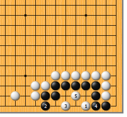
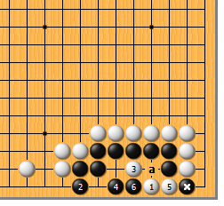
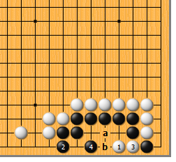
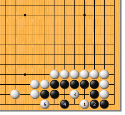
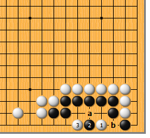
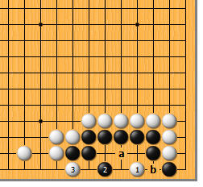
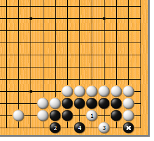

|  |  | |
| 图1 白1透点，只此一手！黑2如立，白3跳点，要点。接下来，黑4如粘，白5鼓，黑成刀把五。黑4如于5位曲，白当然于4位断入，黑也死。
| 图2 白1、黑2交换后，白3如马上尖，则次序错误。黑4倒尖，手筋！白5如断入，黑6挤。黑*子可不是放在那儿玩的，白a接不上。 | |
|  |  | |
| 图3 白1、黑2后，白3也不能马上断入。否则，黑4倒尖，净活。白a则黑b，领教过了吧？ | 图4 白1点时，黑2如马上粘，白3就应该尖。黑4倒尖，白5扳，黑死。黑4如于5位立，白走4位，成刀把五。白3如于4位跳，黑3位曲，成双活。（千万大意不得！）
| |
|  |  | |
图5 白1点时，黑2靠，浑水摸鱼。不用慌，白3夹，黑简单不行。黑a则白b，黑b则白a，黑死。白3如于a位挖打，黑3位退，净活！（陷阱多多哦） | 图6 白1时，黑2如尖，白当如何？很简单，白3扳即可。显然，a、b是见合，黑只能得其一。白3如急着走a位或b位，黑3位立，活！
| |
|  | 您的高见 | |
图7 白1如点中间，见似急所，实属绣花枕头。黑2立，已然不死。白3如尖，黑4也尖，黑*子在那儿候着呢！白3如于4位尖，黑3位也尖，是双活。 |